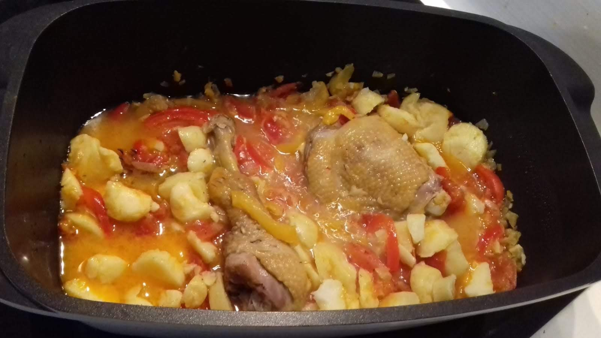

Poulet basquaise

Ici avec des patates vapeur. Photo par Christian Desfontaines
Pour 4 personnes :
- Un poulet coupé en morceaux
- 1kg de tomates
- 700g de poivrons (trois gros), de couleurs différentes
- 3 oignons
- 3 gousses d'ail
- Un verre de vin blanc
- Un bouquet garni
- Huile d'olive, poivre, sel
- Faire chauffer 4 cuillères à soupe d'huile dans une cocotte. Y faire dorer les oignons émincés, l'ail pressé et les poivrons coupés en lanière pendant 5 minutes.
- Éplucher les tomates, les couper en morceaux et les rajouter à la cocotte avec le bouquet garni. Saler, poivrer, et laisser mijoter une vingtaine de minutes à couvert.
- Faire dorer les morceaux de poulets salés et poivrés à l'huile d'olive. Les ajouter aux légumes, rajouter le vin blanc et laisser mijoter ~35 minutes à couvert.
Accompagnement possible : Riz, pâtes, ou patates vapeur que l'on rajoute dans la cocotte en fin de cuisson. Ne pas compter sur la quantité de légumes en espérant qu'il en reste, ça réduit beaucoup (mais ça fait du bon jus :D)